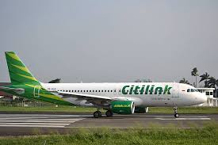

CITILINK

Citilink adalah maskapai penerbangan bertarif rendah (Low-Cost Carrier/LCC) asal Indonesia yang merupakan anak perusahaan dari Garuda Indonesia Group. Berdiri sejak 2001, Citilink melayani rute domestik dan regional dengan fokus menyediakan perjalanan udara yang terjangkau